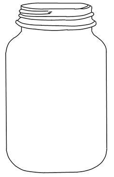

<!DOCTYPE html>
<html>
<head>
  <script src="../PsiturkJarExperiment/jspsych.js"></script>
  <script src="../PsiturkJarExperiment/plugins/jspsych-canvas-keyboard-response.js"></script>
  <script src="../PsiturkJarExperiment/plugins/jspsych-canvas-keyboard-response-draw.js"></script>
  
      <script src="../PsiturkJarExperiment/plugins/jspsych-image-keyboard-response.js"></script>
      <script src="../PsiturkJarExperiment/plugins/jspsych-html-keyboard-response.js"></script>
	  
          <script src="../PsiturkJarExperiment/plugins/jspsych-image-keyboard-response-original.js"></script>


  <script src="../PsiturkJarExperiment/js/fabric.js"> </script>
  <link rel="stylesheet" href="../PsiturkJarExperiment/css/jspsych.css"></link>
  <style>
    img {
      width: 300px;
    }
  </style>
</head>
<body>   </body>
<script>
    var coinresultarray = [];
    var colorresultarray = [];
	var sequence_counter = 0;
    var sequence_counter_jar_1 = 0;
    var sequence_counter_jar_2 = 0;
    var tutorial_trials = 0;
    var testimage = []
	var CorrectResponse = 0
    var Block_Percent_flag = 'off';

    

    // Will be used to shuffle jar choice, ball sequence, block sequence

    ////////////

//Sequence array
var ball_drawing_trials_1 = [2, 5, 10]
var ball_drawing_sequence_1 = jsPsych.randomization.repeat(ball_drawing_trials_1, 7);
    
var ball_drawing_trials_2 = [2, 5, 10]
var ball_drawing_sequence_2 = jsPsych.randomization.repeat(ball_drawing_trials_2, 7);

// Jar selected Array
var jar_selection = ['jar_1_both','jar_2_both']
var jar_selection_sequence = jsPsych.randomization.repeat(jar_selection, 21);

//////////////////

    


    
var timeline = []
var trial_counter = 1
  var trial = {
    type: 'canvas-keyboard-response',
    stimulus: [],
    choices: jsPsych.NO_KEYS,
    trial_duration: 250,
    prompt: '<p>No response allowed</p>',
  	on_finish: function(){
  		  coinresultarray += coinresult
          if (coinresult === 1){
              colorresultarray.push("red")}
              else {
                  colorresultarray.push("blue")
              }
	    trial_counter += 1
        
          }
    }
	
    var tutorial_trial = {
      type: 'canvas-keyboard-response-draw',
      stimulus: [],
      choices: jsPsych.NO_KEYS,
      trial_duration: 2000,
      prompt: '<p>No response allowed</p>',
    	on_finish: function(){
    		  coinresultarray += coinresult
            if (coinresult === 1){
                colorresultarray.push("red")}
                else {
                    colorresultarray.push("blue")
                }
  	    trial_counter += 1
        
            }
      }
  
  
  var test_trial = {
      type: 'image-keyboard-response',
      stimulus: [],
      stimulus_height: 400,
      stimulus_width: 650,
      choices: ['leftarrow', 'rightarrow'],
      prompt: '<p>Press the left arrow key for left and right arrow key for right</p>',
	   on_start: function(trial){
           trial.stimulus = testimage
		   if (Block_Percent_flag === 'off'){
		   Block_Percent = (Math.round(((sequence_counter+1)/(tutorial_block.repetitions + 6))*100))
		   }
		   else {
		   Block_Percent = (Math.round(((sequence_counter+1)/experiment_block.repetitions)*100))
		   }
		   },
      
      on_finish: function(data){
	  	coinresultarray = []
		colorresultarray = []
		trial_counter = 1
        tutorial_trials += 1

    switch(jar_selection_sequence[sequence_counter]) {
    case 'jar_1_both':
    sequence_counter_jar_1 += 1
    break;
    
    case 'jar_2_both':
    sequence_counter_jar_2 += 1
    break;
}
    sequence_counter += 1
      
      }
  }

//create actual jars
var jar_blueballs = [0]
var jar_redballs = [1] 


var jar_1_blue = jsPsych.randomization.repeat(jar_blueballs, 18)
var jar_1_red = jsPsych.randomization.repeat(jar_redballs, 2)
var jar_1_concat = jar_1_blue.concat(jar_1_red)
var jar_1_both = jsPsych.randomization.shuffle(jar_1_concat)

var jar_2_blue = jsPsych.randomization.repeat(jar_blueballs, 2)
var jar_2_red = jsPsych.randomization.repeat(jar_redballs, 18)
var jar_2_concat = jar_2_blue.concat(jar_2_red)
var jar_2_both = jsPsych.randomization.shuffle(jar_2_concat)

testimage = ['2R18BSlide.png']

  
var jar_change_1 = {
	type: 'image-keyboard-response-original',
    stimulus: ['2Red18Blue4Red16Blue.png'],
    stimulus_height: 400,
    stimulus_width: 650,
	choice: ['spacebar'],
	prompt: '<p> Jar Shift. The colored balls will now be drawn from the two jars above. Hit the spacebar to continue. </p>',
	on_finish: function(){
    
var ball_drawing_trials_1 = [2, 5, 10]
var ball_drawing_sequence_1 = jsPsych.randomization.repeat(ball_drawing_trials_1, 7);
    
var ball_drawing_trials_2 = [2, 5, 10]
var ball_drawing_sequence_2 = jsPsych.randomization.repeat(ball_drawing_trials_2, 7);

// Jar selected Array
var jar_selection = ['jar_1_both','jar_2_both']
var jar_selection_sequence = jsPsych.randomization.repeat(jar_selection, 21);
    
        
	jar_blueballs = [0]
	jar_redballs = [1] 


    jar_1_blue = jsPsych.randomization.repeat(jar_blueballs, 18)
	jar_1_red = jsPsych.randomization.repeat(jar_redballs, 2)
	 jar_1_concat = jar_1_blue.concat(jar_1_red)
	 jar_1_both = jsPsych.randomization.shuffle(jar_1_concat)

	 jar_2_blue = jsPsych.randomization.repeat(jar_blueballs, 16)
	 jar_2_red = jsPsych.randomization.repeat(jar_redballs, 4)
	 jar_2_concat = jar_2_blue.concat(jar_2_red)
	 jar_2_both = jsPsych.randomization.shuffle(jar_2_concat)
	  
	 sequence_counter = 0
     sequence_counter_jar_1 = 0
     sequence_counter_jar_2 = 0
        
    testimage = ['2Red18Blue4Red16Blue.png']
  }
}
  
  var jar_change_trial_1 = {
	  timeline: [jar_change_1],
	  repetition: 1
  }
  
  var jar_change_2 = {
	type: 'image-keyboard-response-original',
    stimulus: ['2Red18Blue8Red12Blue.png'],
    stimulus_height: 400,
    stimulus_width: 650,
	choice: ['spacebar'],
	prompt: '<p> Jar Shift. The colored balls will now be drawn from the two jars above. Hit the spacebar to continue </p>',
	on_finish: function(){
var ball_drawing_trials_1 = [2, 5, 10]
var ball_drawing_sequence_1 = jsPsych.randomization.repeat(ball_drawing_trials_1, 7);
    
var ball_drawing_trials_2 = [2, 5, 10]
var ball_drawing_sequence_2 = jsPsych.randomization.repeat(ball_drawing_trials_2, 7);

// Jar selected Array
var jar_selection = ['jar_1_both','jar_2_both']
var jar_selection_sequence = jsPsych.randomization.repeat(jar_selection, 21);
        
        
	jar_blueballs = [0]
	jar_redballs = [1] 


	jar_1_blue = jsPsych.randomization.repeat(jar_blueballs, 18)
	jar_1_red = jsPsych.randomization.repeat(jar_redballs, 2)
	jar_1_concat = jar_1_blue.concat(jar_1_red)
	jar_1_both = jsPsych.randomization.shuffle(jar_1_concat)

	jar_2_blue = jsPsych.randomization.repeat(jar_blueballs, 12)
	jar_2_red = jsPsych.randomization.repeat(jar_redballs, 8)
	jar_2_concat = jar_2_blue.concat(jar_2_red)
	jar_2_both = jsPsych.randomization.shuffle(jar_2_concat)
	  
	sequence_counter = 0
    sequence_counter_jar_1 = 0
    sequence_counter_jar_2 = 0
        
    testimage = ['2Red18Blue8Red12Blue.png']
  }
}
  
  var jar_change_trial_2 = {
	  timeline: [jar_change_2],
	  repetition: 1
  }
  
    var jar_change_3 = {
	type: 'image-keyboard-response-original',
    stimulus: ['8Red12Blue12Red8Blue.png'],
    stimulus_height: 400,
    stimulus_width: 650,
	choice: ['spacebar'],
	prompt: '<p> Jar Shift. The colored balls will now be drawn from the two jars above. Hit the spacebar to continue </p>',
	on_finish: function(){
//var ball_drawing_trials_1 = [2, 5, 10]
var ball_drawing_sequence_1 = jsPsych.randomization.repeat(ball_drawing_trials_1, 7);
    
//var ball_drawing_trials_2 = [2, 5, 10]
var ball_drawing_sequence_2 = jsPsych.randomization.repeat(ball_drawing_trials_2, 7);

// Jar selected Array
var jar_selection = ['jar_1_both','jar_2_both']
var jar_selection_sequence = jsPsych.randomization.repeat(jar_selection, 21);
        
        
    jar_blueballs = [0]
	jar_redballs = [1] 


	jar_1_blue = jsPsych.randomization.repeat(jar_blueballs, 12)
	jar_1_red = jsPsych.randomization.repeat(jar_redballs, 8)
	jar_1_concat = jar_1_blue.concat(jar_1_red)
	jar_1_both = jsPsych.randomization.shuffle(jar_1_concat)

	jar_2_blue = jsPsych.randomization.repeat(jar_blueballs, 8)
	jar_2_red = jsPsych.randomization.repeat(jar_redballs, 12)
	jar_2_concat = jar_2_blue.concat(jar_2_red)
	jar_2_both = jsPsych.randomization.shuffle(jar_2_concat)
	  
	sequence_counter = 0
    sequence_counter_jar_1 = 0
    sequence_counter_jar_2 = 0
        
    testimage = ['8Red12Blue12Red8Blue.png']
  }
}
  
  var jar_change_trial_3 = {
	  timeline: [jar_change_3],
	  repetition: 1
  }
  

  ///The sequence is how many times a ball is drawn in a row. Nests with a test trial
  var first_draw_sequence = {
	  timeline: [tutorial_trial],
	loop_function: function(data){
      if(jar_selection_sequence[sequence_counter] === 'jar_1_both'){            
          if (ball_drawing_sequence_1[sequence_counter_jar_1] >= trial_counter){
			return true;
	          }
	      else{
		     return false;
            }
	}
      if(jar_selection_sequence[sequence_counter] === 'jar_2_both'){            
          if (ball_drawing_sequence_2[sequence_counter_jar_2] >= trial_counter){
			return true;
	          }
	      else{
		     return false;
            }
	}
              
          }
  }
	
	var draw_sequence = {
		  timeline: [trial],
		loop_function: function(data){
        if(jar_selection_sequence[sequence_counter] === 'jar_1_both'){            
            if (ball_drawing_sequence_1[sequence_counter_jar_1] >= trial_counter){
				return true;
		          }
		      else{
			     return false;
              }
		}
        if(jar_selection_sequence[sequence_counter] === 'jar_2_both'){            
            if (ball_drawing_sequence_2[sequence_counter_jar_2] >= trial_counter){
				return true;
		          }
		      else{
			     return false;
              }
		}
                
            }
	  }
  
    var jar_block_order_array = [jar_change_trial_1,jar_change_trial_2,jar_change_trial_3]
    var jar_block_order_shuffled = jsPsych.randomization.shuffle(jar_block_order_array)
    
    ///Combination of balls being drawn and a test trial. Pushed to highest timeline node.
	  var tutorial_block_draw = {
		  timeline: [first_draw_sequence, test_trial],
		  repetitions: 6
	  }
	   
	    var tutorial_block = {
        timeline: [draw_sequence, test_trial],
		///should be 30 for full tutorial block
			repetitions: 30}
    
    
    var experiment_block = {
        timeline: [draw_sequence, test_trial],
		///should be 42 for full test block
        repetitions: 42}
    
    var instructions_1 = {
	type: 'image-keyboard-response-original',
    stimulus: ['InstructionsP1.png'],
    stimulus_height: 400,
    stimulus_width: 650,
	choice: [],
	prompt: '<p> Hit any key to move to the next slide. </p>'
    }
    
    var instructions_2 = {
	type: 'image-keyboard-response-original',
    stimulus: ['InstructionsP2.png'],
    stimulus_height: 400,
    stimulus_width: 650,
	choice: [],
	prompt: '<p> Hit any key to move to the next slide. </p>'
    }
    
    var instructions_3 = {
	type: 'image-keyboard-response-original',
    stimulus: ['InstructionsP3.png'],
    stimulus_height: 400,
    stimulus_width: 650,
	choice: [],
	prompt: '<p> Hit any key to move to the next slide. </p>'
    }
    
    var instructions_4 = {
	type: 'image-keyboard-response-original',
    stimulus: ['InstructionsP4.png'],
    stimulus_height: 400,
    stimulus_width: 650,
	choice: [],
	prompt: '<p> Hit any key to move to the next slide. </p>'
    }
	
    var instructions_44 = {
	type: 'image-keyboard-response-original',
    stimulus: ['InstructionsP44.png'],
    stimulus_height: 400,
    stimulus_width: 650,
	choice: [],
	prompt: '<p> Hit any key to move to the next slide. </p>'
    }
    
    var instructions_5 = {
	type: 'image-keyboard-response-original',
    stimulus: ['InstructionsP5.png'],
    stimulus_height: 400,
    stimulus_width: 650,
	choice: [],
	prompt: '<p> Hit any key to move to the next slide. </p>'
    }
    
    var instructions_6 = {
	type: 'image-keyboard-response-original',
    stimulus: ['InstructionsP6.png'],
    stimulus_height: 400,
    stimulus_width: 650,
	choice: [],
	prompt: '<p> Hit any key to move to the next slide. </p>'
    }
	
	var performance_summary = {
		type: 'html-keyboard-response',
		stimulus: [],
		on_start: function(trial){
			
			Block_Percent_flag = 'on';
						
			switch(CorrectResponse > 28) {
                case true:
                trial.stimulus = 'You need 28 Points or above to continue. <br> Your Score: ' + CorrectResponse + ' <br> Press Any Key to Continue to the next block'
                trial.choices = jsPsych.ALL_KEYS
                break;
                
            
                case false:
				 trial.stimulus = 'You need above 28 Points to continue. <br> Your Score: ' + CorrectResponse + ' <br> You have not passed the tutorial. Please close the Window and give up the HIT. This will not count as a Rejection.'
				 trial.choices = jsPsych.NO_KEYS
                break;
			}
			
			
		}
		
	}
    
    timeline.push(instructions_1)
       timeline.push(instructions_2)
       timeline.push(instructions_3)
       timeline.push(instructions_4)
	   timeline.push(instructions_44)
       timeline.push(instructions_5)
       timeline.push(instructions_6)
	timeline.push(tutorial_block_draw)
    
	timeline.push(tutorial_block)
	timeline.push(performance_summary)
	
	timeline.push(jar_block_order_shuffled[0])
	timeline.push(experiment_block)
    timeline.push(jar_block_order_shuffled[1])
    timeline.push(experiment_block)
    timeline.push(jar_block_order_shuffled[2])
    timeline.push(experiment_block)

  
  jsPsych.init({
    timeline: timeline,
       on_data_update: function(data){
           jsPsych.data.get().addToLast({coinresultarray: coinresultarray});
           jsPsych.data.get().addToLast({colorresultarray: colorresultarray})
           jsPsych.data.get().addToLast({jarselectedarray: jar_selection_sequence[sequence_counter]})
       },
    on_finish: function() {
      jsPsych.data.displayData();
	  //jsPsych.data.get().localSave('csv','testdata.csv');
    },
    default_iti: 0
  });
</script>
  
</html>

